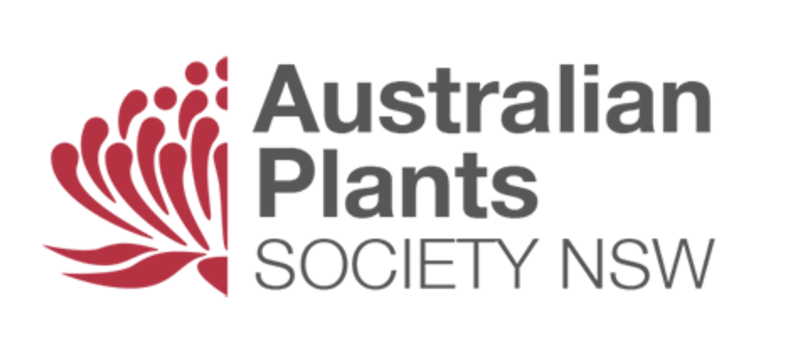

Acknowledgement | Specific Mention
First and foremost, I would like to acknowledge these resources that assisted me in creating the final website. These resources will be further referenced below.
Reinvigorating the brand
For the target audience, I wanted the Australian Plant Society to appeal to not only rural cities but also metropolitan areas such as Sydney. From images that were shown on the original website, it appeared member were mainly seniors, so I wanted the brand to appear contemporary and youthful to encourage a future generation of Australian native plant enthusiasts.
Home Page - Desktop
For the colour scheme of the overall website, I ended up keeping the olive green and replaced the light cream with a more solid beige to create a nice contrast and aesthetic wise, looked far better and gave more warmth than the combination on the prototype. When I asked a potential end-user how they thought about the colour scheme between the two, they prefered the more warm beige than the light cream as it visually stood out more.
In terms of the content being displayed, I decided not to incorporate a 'history section' because I think it would be rather unengaging and the end-user would rather know what they do and what they did do. Therefore, I replaced it with a row of the organisation's mission, vision and goal of now to the future, and hope the end-user would resonate with them.
In the 'about us' section and throughout, I decided to keep on mentioning metropolitan areas such as Sydney because, after all, it contains a population of roughly 5 million people, that's about 66 per cent of entire New South Wales population. Furthermore, when people would think of hearing 'Australian native plants', they would mainly associate it with the outback or far away from cities - When in actuality, is not true, we're all surrounded by it even if we don't know. Therefore, this demographic was a priority of mine to appeal.
Home Page - Mobile
As intended, I wanted this website to be responsive for any device such as phones so the end-user will be able to scroll through all the same content as the grids are broken down to a singular column. The navigation bar has also been hidden in the hamburger icon.
Logo - Visual Identity
For the visual identity of the Australian Plant Society NSW, I decided to use the same logo but changed the overall colours to white, and changed the logotype to solely one sans serif typeface. The reasoning was to give it a more contemporary and youthful appearance, as well as for it to display well in front of the olive green navigation background.
Logo - Favicon
The official Australian Plants Society website did not include a favicon, and as a result, it would've been difficult for users to distinguish it between other tabs on their desktop. Therefore, I included a favicon with the updated logo without the text and made the page title 'APS -- [Page]'. APS for the acronym of the organisation, not the full name as it would be more useful to at least have the user know what page they're on when viewing tabs.
Navigation Bar - Desktop

While I did refer using a sans-serif typeface for the logotype to give it a more contemporary look, I did use a serif font for the navigation bar lists to remind of the many decades this organisation has been running for - roughly 60 years. It was about that balance between history and appearing youthful.
To remind the user which page they're on, a beige box will be displayed on the navigation bar, as well as assistance from the page title.
Navigation Bar - Mobile
As presented and mentioned previously, I wanted the navigation bar to be responsive and have the list hidden in the hamburger icon when viewed from a mobile device. When the user taps on the hamburger icon, the navigation list will be displayed vertically and take up the entire screen beside the stick navigation. The user will know what page they're on as the text will be in a dark grey.
Events Page - Desktop
For the events, I decided to simplify it by not adding a calendar and display the three most frequent activities the organisation hosts. I also intentionally assigned a whole row for the conservation to highlight the importance of Australian plant conservation and the threat it faces due to climate change, including incorporating a shortcut button to get them to engage with the organisation.
I also intentionally assigned a whole row for the conservation section to highlight the importance of Australian plant conservation and the threat it faces due to climate change, including incorporating a shortcut button to get users to engage in these conservation activities organisation creates. As we have seen in recent years, Sydneysiders have taken to the streets to maintain the rage on climate action.
Events Page - Mobile
Besides different content now added, the events page can be viewed from a mobile device in a singular column. In addition to headings, I added mini white gaps between each card to aid in distinguishing each activity.
Get Involved Page - Desktop
Similar to the prototype, I assigned each row for the 'get involved' activities such as a donation, membership and volunteer section. I repositioned and redesigned the icons in each area. I also specifically assigned all interactive forms and links on the right-hand side of the rows and all required headings and descriptions to encourage the end-user to get involved on the left-hand side, to assist in user-experience.
Visually wise, I change the background colour back-and-forth like from beige to olive green to beige to keep each section visually distinguishable.
Get Involved Page - Mobile
Again, the users would be able to view the 'get involved' page with the information presented in a singular column.
Contact Us Page - Desktop
Comparing the prototype and end-website, the layout of the contact page remained the same, just visual differences.
Contact Us Page - Mobile
Again, the users would be able to interact with the contact page with the content presented in a singular column.
References
- A few of our members enjoying a morning at Christine and Robert’s Place. (2020, October 21). [Photograph]. Australian Plants Society - Macarthur Group. Retrieved from: https://www.facebook.com/Australian-Plants-Society-Macarthur-Group-114950661921151/photos/3464220153660835
- Australian Plants Society NSW - About us. (2020). Australian Plant Society NSW. Retrieved from: https://austplants.com.au/about-us
- Australian Plants Society NSW - Home. (2020). Australian Plants Society NSW. Retrieved from: https://austplants.com.au/
- CodingNepal. (2019, August 9). Responsive Navigation Menu Bar using HTML & CSS [Video]. YouTube. Retrieved from https://www.youtube.com/watch?v=oLgtucwjVII&feature=emb_title
- Daniel Clarke, Conservation Officer, APS NSW. (2020, June 12). [Photograph]. North Shore Group. Retrieved from: https://austplants.com.au/North-Shore-Meetings
- How To Create a Contact Form with CSS. (n.d.). W3Schools. Retrieved from: https://www.w3schools.com/howto/howto_css_contact_form.asp
- Horn, T. (2019, June 6). Responsive grid in 2 minutes with CSS Grid Layout. Medium. Retrieved from https://travishorn.com/responsive-grid-in-2-minutes-with-css-grid-layout-4842a41420fe
- Host Joan Lynch of Narooma accepting a present in appreciation of the visit by the Australian Plant Society South East NSW group. (2017, October 27). [Photograph]. Narooma News. Retrieved from: https://www.naroomanewsonline.com.au/story/5000918/narooma-garden-of-joan-lynch-visited-by-plant-society/
- Regenerating plants below the gully in the Pulford garden. (2017, November 7). [Photograph]. The Beagle. Retrieved from: https://www.beagleweekly.com.au/post/2017/06/11/australian-plant-society-south-east-nsw-group-news
- What we do. (n.d.). [Photography]. Australian Plants Society NSW. Retrieved from: https://austplants.com.au/about-us